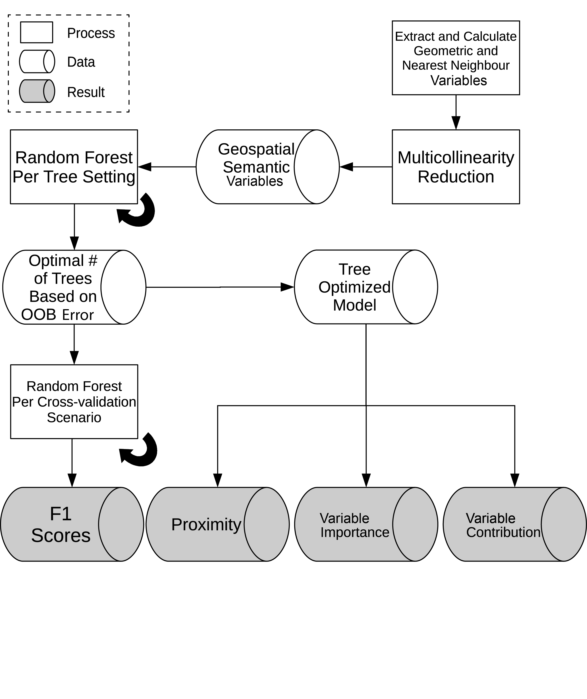
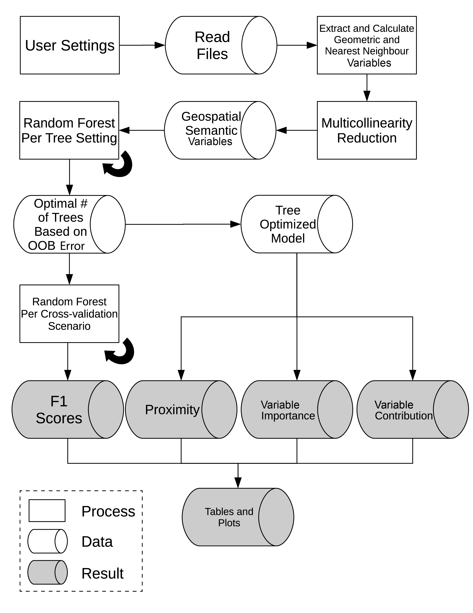
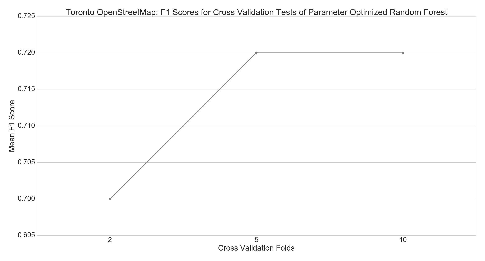
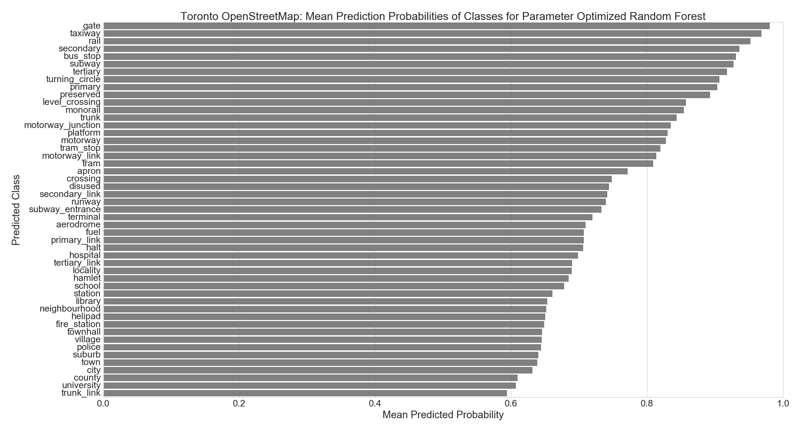
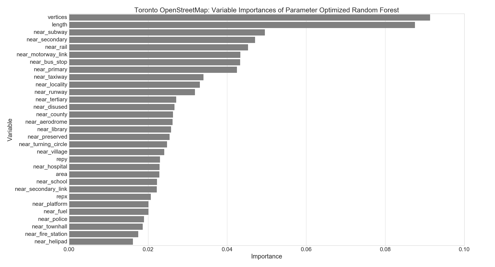
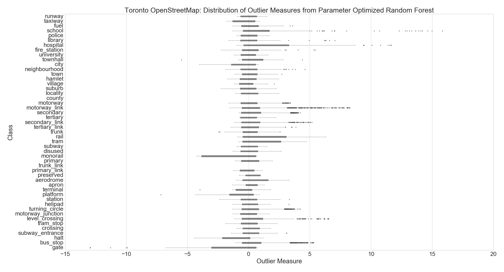
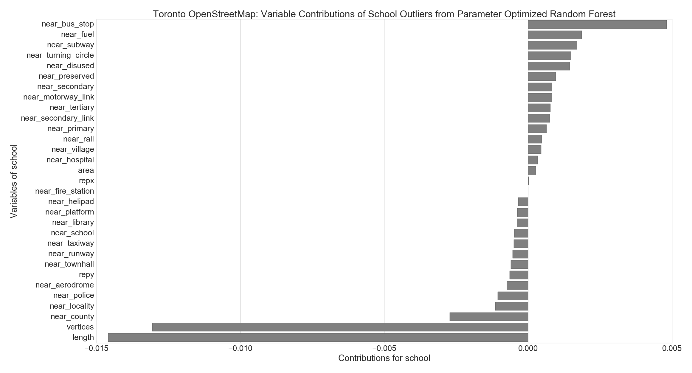

Geospatial Semantic Pattern Recognition of
Volunteered Geographic Data Using
the Random Forest Algorithm
Richard Wenrwen@ryerson.ca
A Thesis Defense for the degree of
Master of Spatial Analysis
at Ryerson University
Under the Guidance of
Dr. Claus Rinner
on
April 27, 2016
Revised May 12, 2016
Overview
Notes: Hover for Info
Introduction
Volunteered Geographic Data (VGD)
Geospatial data from engagement of private citizens
| Advantages | Disadvantages |
|---|---|
| Cost effective | Uncertain quality |
| High temporal resolution | User behaviour |
| Large quantities | Maintenance |
Ref: (Feick & Roche, 2012); (Goodchild, 2007); (Koukoletsos et al., 2012)
Random Forests and VGD
- Minimal preprocessing of variables
- Automatable, parallellizable, and scalable
- Detection of outliers
- Insight into variable influences on predictions
- Takes advantage of spatially enabled data
Decision Trees
- Root Node: 0 incoming and >= 1 outgoing paths
- Internal Node: 1 incoming and >= 2 outgoing paths
- Leaf Node: 1 incoming and 0 outgoing paths
Ref: (Tan, Steinbach, & Kumar, 2006)
Decision Trees: Information Gain
- Purity: measure of quality of split
- Maximize purity to determine best variable for split
- Reduction of prediction uncertainty for split
- E.g Given bus stop distance, predict if an object = school:
Ref: (Quinlan, 1984); (Rokach & Maimon, 2005)
Decision Trees: Algorithm
- Obtain information gains for all variables
- Split on highest information gain variable
- Repeat 1 & 2 on remaining nodes
- Stop when criteria met (e.g. leaf nodes remain)
Random Forests
Model with many decision trees from random sampling
- Reduces overfitting issue from decision trees
- Aggregate decision trees for predictions
- Less sensitive to errors and outliers
Ref: (Breiman, 2001)
Random Forests: Algorithm
- Randomly sample ~2/3 of data
- Train decision tree on random sample
- Repeat 1-3 until desired # of trees
Research Objective
Discover and explain patterns in VGD with
automated random forest models trained on
geospatial semantic variables using OSM data
in the City of Toronto, Ontario, as a demonstration
Data
OpenStreetMap (OSM)
Online Collaborative Platform for users to generate VGD
- Digitize geographic object
- Tag geographic object (e.g. amenity=college)
Ref: (Haklay, 2008)
Mapzen Metro Extracts
- City-sized OSM data in standard geospatial formats
- Used 70,898 geographic objects in the City of Toronto
- Planar reprojection (UTM NAD83 Zone 17N)
| Category | Geometry Type | Count |
|---|---|---|
| Places | Point | 760 |
| Amenities | Point | 1507 |
| Transport Areas | Polygon | 72 |
| Aero Ways | Line | 438 |
| Transport Points | Point | 21,309 |
| Roads | Line | 46,812 |
Ref: (Mapzen, 2016)
Geospatial Semantic Variables
- Extracted from geometry data
- Representative Coordinates (Rep-X, Rep-Y)
- Nearest Neighbour Distances of Each Class (NNc)
| Area | Length | Vertices | Rep-X | Rep-Y | NNc |
|---|---|---|---|---|---|
| Meters | Meters | Count | Position | Position | Distance |
| ... | ... | ... | ... | ... | ... |
Sample Amenities Data for Toronto, ON
Methodology
Methodology: Overview
Multicollinearity Reduction
Order area, length, vertices, & coordinates first
Set Remain as all available variables in a desired order For each variable Var1 in Remain: Set Other as all Remain variables that are not Var1 For each variable Var2 in Other: Compute Pearson correlation Corr of Var1 and Var2 if Corr < = -0.7 or Corr > = 0.7: Remove Var2 from Remain Output Remain contains variables without high multicollinearity
Ref: (Dietterich, 2000)
Parameter Optimization
Determine model based on lowest out-of-bag error estimate;
the generalization error from ~1/3 of the training samples
- 64, 96, and 128 decision trees
- Weights for unbalanced class frequencies
Ref: (Oshiro et al., 2012)
Cross-validation Performance
- Split dataset into folds for predicting on unseen data
- F1 Score: class weighted accuracy
| Folds | % Training | % Testing |
|---|---|---|
| 2 | 50% | 50% |
| 5 | 80% | 20% |
| 10 | 90% | 10% |
Ref: (Powers, 2011)
Average Class Probability
- Certainty for predictions of each class
- 0 to 1; uncertain to certain
- Tree Probability: proportion of class samples in a leaf
- Class Probability: mean of tree probabilities in forest
Ref: (Bostrom, 2007)
Variable importance
Sum of weighted impurity decreases for nodes of a variable
in forest averaged by sample size of trees.
- Variable influence on predictions
- Ranked to show most important variables
- Higher values indicate higher influence
Ref: (Louppe et al., 2013)
Outlier Measure and Variable Contributions
- Proximity: similarity between two data samples
- Outlier Measure: normalized proximities within a class, where outliers are values greater than 10
- Variable Contribution: changes in probability for class between nodes for a variable
Ref: (Louppe, 2014); (Breiman & Cutler, 2004); (Palczewska et al., 2014)
Results
Automated Python Script
Optimized Number of Trees
| Trees | Out-of-bag Error | Fit |
|---|---|---|
| 64 | 0.1667 | 0.9995 |
| 96 | 0.1646 | 0.9996 |
| 128 | 0.1645 | 0.9996 |
Cross-validation Performance
Average Class Probabilities
Variable Importance
Outliers
Outliers: Variable Contributions
Example: Top 5 Variable Contrib. for Outliers
Discussion and Conclusion
Recommendations and Auto-completion
- Tag suggestions with variable influences
- Automated tag completion with probabilities
- Detection of interesting objects
Ref: (Karagiannakis et al., 2015)
Information and Knowledge Support
- Improved user knowledge using variable metrics
- Reduction of redundant data
- Insight into data quality and semantics
Limitations
- User editing history was not utilized
- Raster data (e.g. satellite imagery) was not utilized
- Only nearest neighbour considered
Ref: (Neis, Goetz, & Zipf, 2015); (Anselin, 1990)
Conclusion
Random forests were effective as an automated method with useful metrics to assess potential geospatial data patterns in VGD.
References
- Anselin, L. (1990). SPATIAL DEPENDENCE AND SPATIAL STRUCTURAL INSTABILITY IN APPLIED REGRESSION ANALYSIS. Journal of Regional Science, 30(2), 185-207.
- Bostrom, H. (2007). Estimating class probabilities in random forests. Machine Learning and Applications, 211-216.
- Breiman, L. (2001). Random Forests. Machine Learning, 45(1), 5-32.
- Breiman, L., & Cutler, A. (2004). Random Forests. Retrieved March 23, 2016, from Random Forests: https://www.stat.berkeley.edu/~breiman/RandomForests/cc_home.htm#outliers
- Dietterich, T. G. (2000). Ensemble Methods in Machine Learning. Multiple classifier systems, 1857, 1-15.
- Feick, R., & Roche, S. (2012). Understanding the Value of VGI. In D. Sui, S. Elwood, & M. Goodchild, Crowdsourcing geographic knowledge (pp. 15-29). Dordrecht: Springer.
- Goodchild, M. F. (2007). Citizens as sensors: the world of volunteered geography. GeoJournal, 211-221.
- Haklay, M. M. (2008). OpenStreetMap: User-Generated Street Maps. Pervasive Computing, 12-18.
- Karagiannakis, N., Giannopoulos, G., Skoutas, D., & Athanasiou, S. (2015). OSMRec Tool for Automatic Recommendation of Categories on Spatial Entities in OpenStreetMap. Proceedings of the 9th ACM Conference on Recommender Systems (pp. 337-338). ACM.
- Koukoletsos, T., Haklay, M., & Ellul, C. (2012). Assessing data completeness of VGI through an automated matching procedure for linear data. Transactions in GIS, 16(4), 477-498.
- Louppe, G. (2014). Understanding Random Forests: From Theory to Practice. Belgium: University of Liege.
- Louppe, G., Wehenkel, L., Sutera, A., & Geurts, P. (2013). Understanding variable importances in forests of randomized trees. Advances in Neural Information Processing Systems, 431-439.
- Mapzen. (2016, March 10). Metro Extracts. Retrieved from Mapzen: https://mapzen.com/data/metro-extracts/
- Oshiro, T. M., Perez, P. S., & Augusto, J. (2012). How many trees in a random forest? In P. Perner, Machine Learning and Data Mining in Pattern Recognition (Vol. 7376, pp. 154-168). Berlin: Springer.
- Palczewska, A., Palczewski, J., Robinson, R. M., & Neagu, D. (2014). Interpreting random forest classification models using a feature contribution method. Integration of Reusable Systems, 193-218.
- Powers, D. M. (2011). Evaluation: from precision, recall and F-measure to ROC, informedness, markedness and correlation. Journal of Machine Learning Technologies, 2(1), 37-63.
- Rokach, L., & Maimon, O. (2005). Top-Down Induction of Decision Trees Classifiers—A Survey. IEEE Transactions on Systems, Man, and Cybernetics, Part C (Applications and Reviews), 35(4), 476-487.
- Tan, P.-N., Steinbach, M., & Kumar, V. (2006). Introduction to Data Mining. Pearson Education.
- Quinlan, J. R. (1984). Induction of decision trees. Machine Learning, 1(1), 81-106.